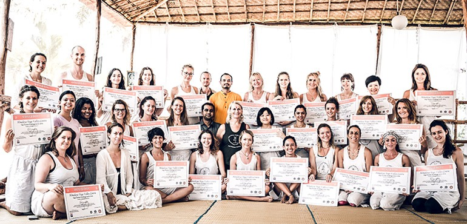

RYS 200 Hour Yoga Teacher Training
200 Hour Yoga Teacher Training Course
Our world renowned 200 Hour, one month intensive Teacher Training Course (TTC) is internationally accredited with Yoga Alliance U.S, Yoga Alliance Professionals UK, Yoga Alliance International, The World Yoga Council and the International Yoga
Federation. Graduates who successfully complete the program are eligible to become RYT’s ® (Registered Yoga Teachers) at a 200 hour level and qualify to teach internationally.
About Our 200 Hour Training
Our 200 Hour Teacher Training Course delivers a comprehensive, theoretical and practical hands-on training designed to deepen their practitioners personal practise and elevate them from student to teacher. Trainees emerge from our TTC as confident
teachers with a strong and solid teaching skill set ready to begin their career. Alongside developing the art of teaching, trainees also gain a comprehensive understanding of the practice of yoga asanas, philosophy, physiology, adjusting,
mantra chanting, chakras, anatomy, ayurveda, mudras, pranayama and meditation and other traditional and contemporary Yoga techniques.
Our curriculum takes you through the essential elements required to deepen and enrich your own yoga practice and to teach students with confidence. Our expert team of teachers will guide you from the fundamental stages of leading a class to teaching
with ease and confidence.
At Yoga Studio we believe that the priority outcome of a Teacher Training Course for a trainee should be the ability to teach a professional class with premium skills when you complete your training. Our training courses are intensive because
the curriculum is outcomes focused and we encourage those with the specific goal of becoming teachers and deepening their practice to attend our training. Our curriculum includes a high number of teaching hours, practicums and teacher orientated
lectures to ensure trainees graduate with the ability to begin their career when they return home and also maintain a disciplined practise.
Becomming A Teacher
The main aim of our 200 Hour Yoga Teacher Training is to provide trainees with the foundational building blocks to teach with confidence and ease as soon as they graduate. In the past ten years of program delivery, we have developed a tried and
tested method of progressive learning practicums. This is reflected by our international alumni of well recognised and successful graduate teachers.
Our training stands alone by providing students with expert lecturers and teachers assigned to each theory subject with renowned international teacher Yogacharya Lalit leading students in the area of asana, alignment and adjusting as well as assisting
students in deepening their own practise . Our school recognizes the value of having multiple teachers specific to each subject rather than one or two teachers covering the entire syllabus. Students also benefit greatly from our trainings
being led by our School Director and founder Lalit who has over 15 years teaching experience and a decade of experience training exceptional teachers.
Our post-course graduate teaching rate is extremely high due to our unique outcome based, progressive learning approach. Trainees teach in a safe and supervised environment from the first week of training so as to develop full confidence during
the month and to find their teaching voice early on. Under close supervision, trainees begin to teach in pairs during their first week, move on to teaching small groups by week two, larger groups by week three and finally the entire class
by week four. Alongside theoretical immersion and abundant feedback and coaching, this method has seen trainees with varied levels of confidence blossom into confident yoga teachers.
Trainees receive consistent personal and group feedback and are given the opportunity to apply the feedback to each new teaching practicum progressing with ease and support towards the end goal of a confident and professional teacher.
Style Of Yoga
School Director and senior teacher Yogacharya Lalit comes from an Ashtanga yoga and Vinyasa Flow lineage. He utilises elements from these traditions as a consistent and solid foundation from which students can develop their individual teaching
style. With his background as an Iyengar student Lalit places strong emphasis on correcting alignment and maintaining integrity in asana as both a trainee and teacher. During the course, you will have opportunity to apply these alignment techniques
to your own practise and as a teacher you will learn how to safely guide multi level students through our established trainee sequence developed by Lalit.
After being immersed in this series with Lalit, students then go on to teach from the same series – graduate teachers leave with a wealth of knowledge being able to teach over 40 postures with confidence. Students also learn the ins and outs of
correct alignment, adjustments and modifications for these postures to ensure they can teach with maximum emphasis on inclusiveness and safety.
Our Curriculum
- Asana techniques including identification of common misalignments, including training and practice in Bandhas, Pranayama, Kriyas, chanting and meditation
- Yoga philosophy of Eight Limbs of Ashtanga and Raja Yoga and Yoga Sutras
- Anatomy and Physiology including chakras, mudras, nadis and health benefits of yoga
- Ethics for Yoga Teachers
- Yoga Lifestyle
- Yoga Business Management
- Introduction to Ayurveda
- Teaching Methodology including sequencing, adjusting , teaching standards, and teacher and learner styles
- Classroom Management
Typical Daily Schedule
| Start |
Finish |
Activity |
| 06:30 |
07:30 |
Morning Meditation, Chanting and Pranayama |
| 07:30 |
08:00 |
Tea Break and reflective journal writing |
| 08:00 |
10:00 |
Yoga Asana Practice |
| 10:00 |
11:00 |
Breakfast |
| 11:00 |
13:00 |
Lecture |
| 13:00 |
15:00 |
Lunch Break/Free Time |
| 15:00 |
16:15 |
Lecture |
| 16:15 |
16:30 |
Break |
| 16:30 |
18:30 |
Yoga Asana practice including teaching practicums |
RYS 200 Hour Teacher Training Course Dates
200 Hour Online Yoga Teacher Training
Location: Online
Dates: 10 Jan 2022 - 22 Jan 2022
Price: $550
Open For Applicataions
200 Hour Yoga Teacher Training in Rishikesh
Location: Rishikesh
Dates: 2 Feb 2022 - 26 Feb 2022
Price: $850
Open For Applicataions
200 Hour Yoga Teacher Training in Rishikesh
Location: Rishikesh
Dates: 9 Mar 2022 - 2 Apr 2022
Price: $850
Open For Applicataions
200 Hour Yoga Teacher Training in Rishikesh
Location: Rishikesh
Dates: 6 Apr 2022 - 30 Apr 2022
Price: $850
Open For Applicataions